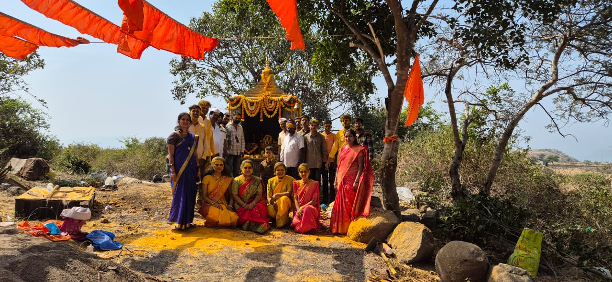
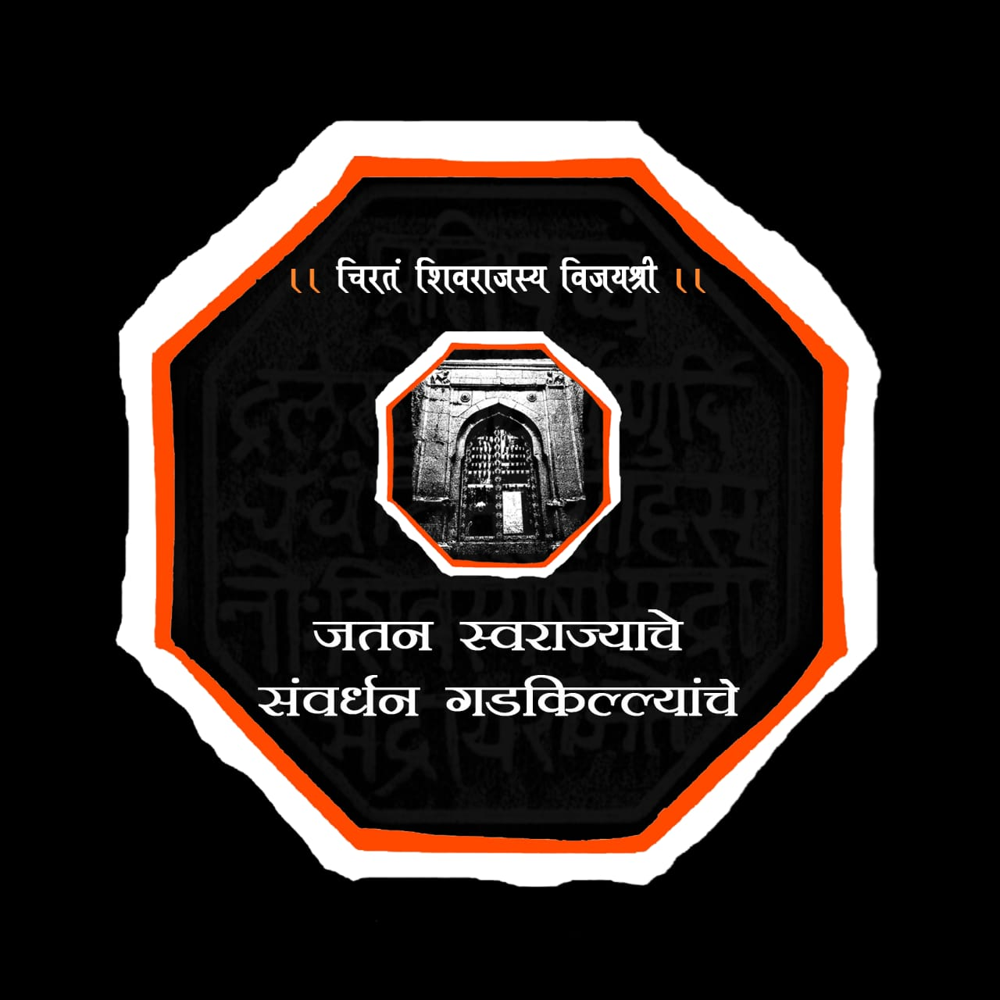

Gallery
परिवाराचा इतिहास




स्वराज्य व गडकोटांच्या सेवेठायी तत्पर
स्वराज्याच्या पवित्र ध्येयाने प्रेरित आणि छत्रपती शिवाजी महाराजांच्या तेजस्वी विचारांनी उजळलेला आमचा परिवार, गडकोटांच्या सेवेसाठी सदैव तत्पर उभा आहे. इतिहासाच्या साक्षी असलेल्या या दुर्गांची माती आमच्यासाठी केवळ दगड-माती नसून ती स्वराज्याची शपथ आहे, पराक्रमाची गाथा आहे आणि महाराजांच्या अद्वितीय स्वप्नांची सजीव आठवण आहे. परिवाराच्या माध्यमातून गडसंवर्धन हे केवळ कार्य नसून ती आमची निष्ठा, आमची साधना आहे. गडांवर नकाशा फलक उभारणे, तटबंदीवरील झाडे काढून त्यांचे संरक्षण करणे, परिसर स्वच्छ ठेवणे, पाण्याच्या वाटा मोकळ्या करणे—अशा अनेक उपक्रमांतून आम्ही गडांची सेवा करत आहोत. प्रत्येक घामाचा थेंब हा स्वराज्याच्या स्मृती जपण्याचा आमचा प्रयत्न आहे. आमचा परिवार युवकांना एकत्र आणून त्यांच्यात स्वराज्यनिष्ठा, देशभक्ती आणि संस्कृतीप्रेम जागवण्याचे कार्य करतो. गडकोट हे केवळ पर्यटन स्थळ नसून ते आपल्या अस्मितेचे प्रतीक आहेत, ही जाणीव प्रत्येकाच्या मनात रुजवणे हेच आमचे ध्येय आहे. स्वराज्याच्या या पवित्र कार्यात आम्ही अखंड प्रयत्नशील राहू.
परिवाराचा इतिहास


Email: Jatanswarajyache@gmail.com